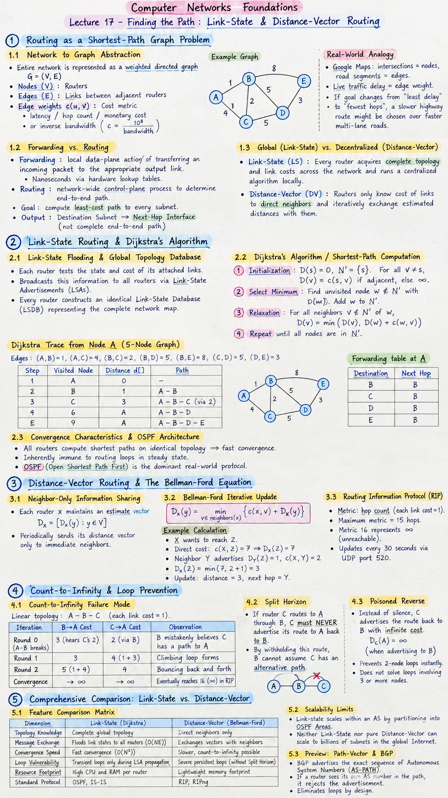

Short Notes & Visual Summary
Handwritten / quick summary notes for Lecture 17:

Click image to open high-resolution version in new tab
Routing as a Shortest-Path Graph Problem
1.1 Network to Graph Abstraction
In network layer architecture, the entire interconnected mesh of packet switches is represented as a weighted directed graph $G = (V, E)$:
- Nodes ($V$): Routers in the autonomous system.
- Edges ($E$): Physical links connecting adjacent routers.
- Edge Weights ($c(u, v)$): Cost metric associated with link $(u, v)$, representing latency, hop count, monetary cost, or inverse bandwidth ($c = \frac{10^8}{\text{bandwidth}}$).
Google Maps treats intersections as nodes and road segments as edges. Live traffic delay represents the edge weight. If link metrics shift from "least delay" to "fewest hops," a slower highway route might be favored over faster multi-lane arterials.
1.2 Forwarding vs. Routing
While forwarding is the local data-plane action of transferring an incoming packet from an input link to the appropriate output link (nanoseconds via hardware lookup tables), routing is the network-wide control-plane process that determines the end-to-end path packets take from source to destination.
The goal of every routing algorithm is to compute the least-cost path to every subnet, outputting entries in the format: Destination Subnet → Next-Hop Interface (not the complete end-to-end path).
1.3 Global (Link-State) vs. Decentralized (Distance-Vector)
- Global / Link-State (LS): Every router acquires complete topology and link costs across the entire network before running a centralized graph algorithm locally.
- Decentralized / Distance-Vector (DV): No router possesses complete topological awareness. Routers only know the cost of links to their direct neighbors and iteratively exchange estimated distances with them.
Link-State Routing & Dijkstra's Algorithm
2.1 Link-State Flooding & Global Topology Database
In link-state algorithms, each router tests the state and cost of its attached links and broadcasts this information to all routers in the network via Link-State Advertisements (LSAs) using reliable flooding. Every router constructs an identical Link-State Database (LSDB) representing the complete network map.
2.2 Step-by-Step Dijkstra Shortest-Path Computation
With an identical map in memory, each router runs Dijkstra's algorithm independently, treating itself as root ($s$):
- Initialization: Set $D(s) = 0$, visited set $N' = \{s\}$. For all $v \neq s$, set $D(v) = c(s, v)$ if directly adjacent, else $\infty$.
- Select Minimum: Find unvisited node $w \notin N'$ such that $D(w)$ is minimal. Add $w$ to $N'$.
- Relaxation: For all neighbors $v \notin N'$ of $w$: $$D(v) = \min(D(v), D(w) + c(w, v))$$
- Repeat until all destination nodes are in $N'$.
Given nodes $A, B, C, D, E$ with edge costs: $(A,B)=1, (A,C)=4, (B,C)=2, (B,D)=5, (B,E)=8, (C,D)=5, (D,E)=3$:
visit A -> d[A] = 0
visit B -> d[B] = 1 (A-B)
visit C -> d[C] = 3 (A-B-C) via edge weight 2
visit D -> d[D] = 6 (A-B-D)
visit E -> d[E] = 9 (A-B-D-E)Forwarding table output at $A$: Destination $E \implies$ Next hop is $B$.
2.3 Convergence Characteristics & OSPF Architecture
Because all routers compute shortest paths on identical topological data, Link-State algorithms converge rapidly and are inherently immune to routing loops in steady state. Open Shortest Path First (OSPF) is the dominant real-world protocol executing this algorithm in enterprise networks.
Distance-Vector Routing & The Bellman-Ford Equation
3.1 Neighbor-Only Information Sharing
In distance-vector routing, routers do not broadcast the entire topology. Instead, each router $x$ maintains an estimate vector $D_x = [D_x(y) : y \in V]$ representing its estimated distance to every destination in the network. Periodically, each router sends its distance vector only to its immediate physical neighbors.
3.2 Bellman-Ford Iterative Update Formulation
When router $x$ receives distance vector $D_v$ from neighbor $v$, it updates its own vector using the Bellman-Ford equation:
$$D_x(y) = \min_{v \in \text{neighbors}(x)} \left\{ c(x, v) + D_v(y) \right\}$$Suppose router $X$ wants to reach $Z$:
- Current direct cost: $c(X, Z) = 7 \implies D_X(Z) = 7$.
- Neighbor $Y$ advertises: $D_Y(Z) = 1$. The link cost between $X$ and $Y$ is $c(X, Y) = 2$.
- Calculation: $D_X(Z) = \min(7, c(X, Y) + D_Y(Z)) = \min(7, 2 + 1) = 3$.
- $X$ updates its distance to $Z$ as $3$, with next hop set to $Y$.
3.3 Routing Information Protocol (RIP) Mechanics
The standard distance-vector implementation in internet history is RIP (RFC 1058 / 2453). In RIP:
- Metric is pure hop count (each link has cost $1$).
- Maximum allowable metric is 15 hops; a metric of $16$ represents $\infty$ (unreachable).
- Updates are broadcast periodically every 30 seconds via UDP port 520.
Count-to-Infinity & Loop Prevention
4.1 The Count-to-Infinity Failure Mode
In Distance-Vector routing: "Good news travels fast, bad news crawls." Consider a linear topology: $A - B - C$, where each link has cost $1$.
| Iteration | $B \to A$ Cost | $C \to A$ Cost | Observation |
|---|---|---|---|
| Round 0 (Link $A-B$ breaks) | 3 (hears $C$'s stale cost 2) | 2 (routes via $B$) | $B$ mistakenly believes $C$ has a path to $A$ |
| Round 1 | 3 | 4 ($1 + D_B(A) = 1 + 3$) | Climbing loop forms |
| Round 2 | 5 ($1 + D_C(A) = 1 + 4$) | 4 | Bouncing back and forth |
| Convergence | $\to \infty$ | $\to \infty$ | Eventually reaches 16 ($\infty$) in RIP |
Because $B$ and $C$ act on second-hand hearsay without global map visibility, they circulate packets endlessly in a 2-node routing loop.
4.2 Split Horizon Technique
Split Horizon states: If router $C$ routes to destination $A$ through router $B$, $C$ must NEVER advertise its route to $A$ back to $B$. By withholding this route from $B$, $B$ cannot mistakenly assume $C$ has an independent alternative path to $A$.
4.3 Poisoned Reverse Invariant
Poisoned Reverse extends Split Horizon explicitly: instead of maintaining silence, $C$ actively advertises the route back to $B$ with an infinite cost:
$$D_C(A) = \infty \quad (\text{when advertising specifically to } B)$$This explicitly poisons any reverse route, preventing 2-node counting loops instantly. (Note: Poisoned reverse does not solve loops involving 3 or more nodes across mesh topologies).
Comprehensive Comparison: Link-State vs. Distance-Vector
5.1 Architectural Feature Comparison Matrix
| Dimension | Link-State (Dijkstra) | Distance-Vector (Bellman-Ford) |
|---|---|---|
| Topology Knowledge | Complete global network topology map | Direct neighbors only |
| Message Exchange | Floods link states to all routers ($O(NE)$) | Exchanges vectors with immediate neighbors |
| Convergence Speed | Fast convergence ($O(N^2)$ local computation) | Slower convergence, subject to count-to-infinity |
| Loop Vulnerability | Transient loops only during LSA propagation | Severe persistent loops without Split Horizon |
| Resource Footprint | High CPU and RAM memory overhead per router | Extremely lightweight memory footprint |
| Standard Protocol | OSPF, IS-IS | RIP, RIPng |
5.2 Computational Overhead & Scalability Limits
Link-state routing scales within enterprise autonomous systems (AS) by partitioning networks into OSPF Areas. However, neither Link-State nor pure Distance-Vector can scale to the billions of subnets comprising the global Internet.
5.3 Preview: Path-Vector & BGP for Inter-Domain Routing
To interconnect independent Autonomous Systems (ISPs, universities, cloud providers) across the global Internet, the Border Gateway Protocol (BGP) implements Path-Vector Routing. Rather than broadcasting mere distances, BGP advertises the exact sequence of Autonomous System Numbers (AS-PATH) packets must traverse. If a router sees its own AS number in the path list, it rejects the advertisement immediately, completely eliminating loops by design.
Original PDF Notes
Below is the original PDF document for reference: